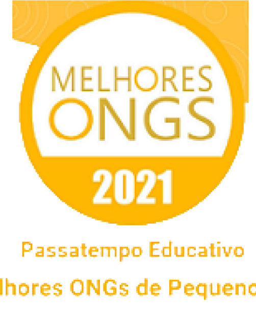
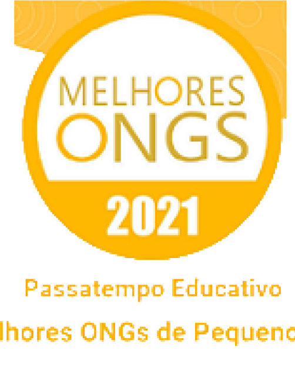
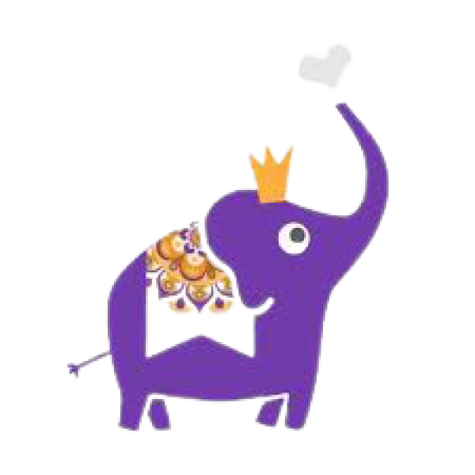
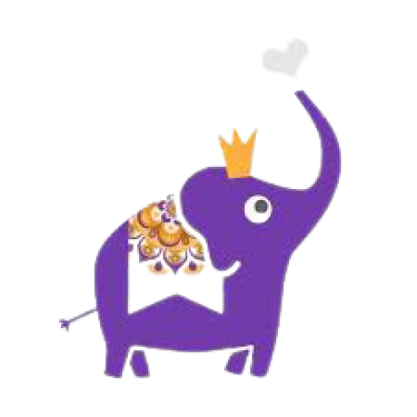
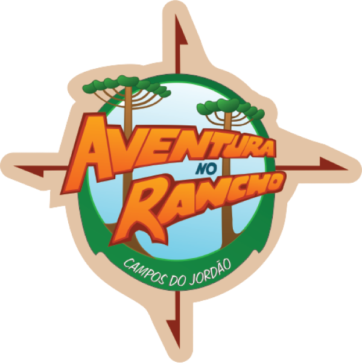
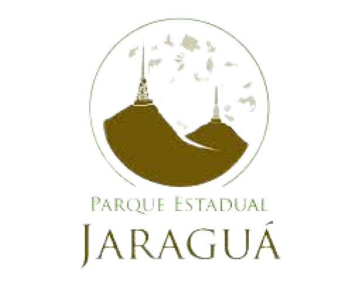
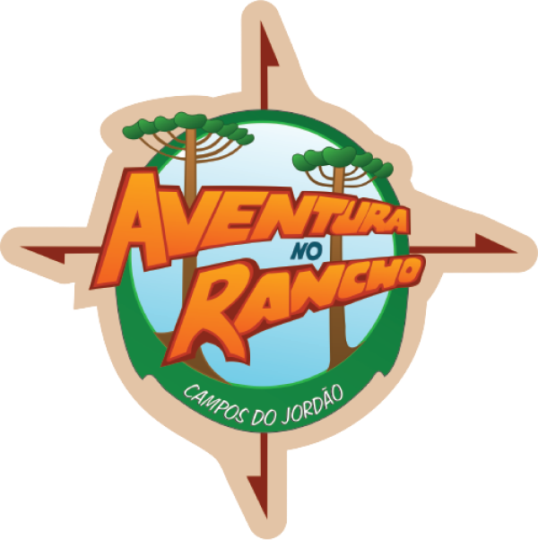
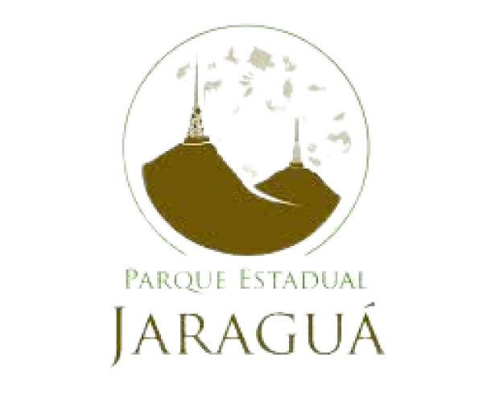

Sobre nós
Passatempo Educativo é uma organização não governamental, sem fins lucrativos, que desenvolve projetos na área educacional, cultural, preservação ambiental e desenvolvimento do turismo sustentável. Reconhecida pelo Ministério da Justiça como OSCIP – Organização Social Civil de Interesse Público sob nº 08071005566.
Atuando há 22 anos na área da educação, nossos projetos têm como objetivos dar continuidade no processo ensino-aprendizagem através de situações práticas com atividades nas escolas, empresas, excursões, estudos do meio, visitas monitoradas, oficinas, workshops, palestras, jogos e gincanas dirigidos, projetos de incentivo à leitura e suporte didático para pais e professores além de elaboração de material pedagógico complementar.
Reinventar os processos educativos e descobrir nosso importante papel na sociedade, através dos projetos Eletivas Novo Ensino Médio, Reforço Interativo, Livros em Ação, STEAM, Robótica nas Escolas entre outros, que tem impactado a educação de milhares de crianças.


 



 



 


